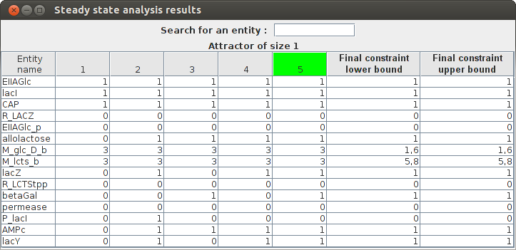
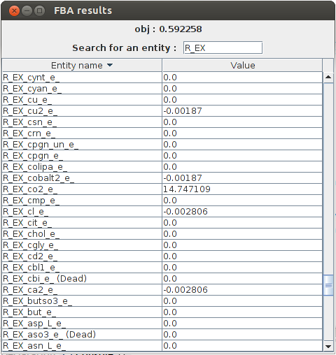
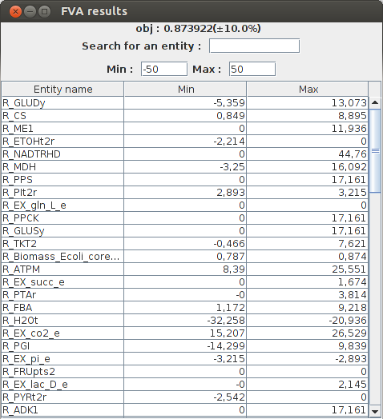
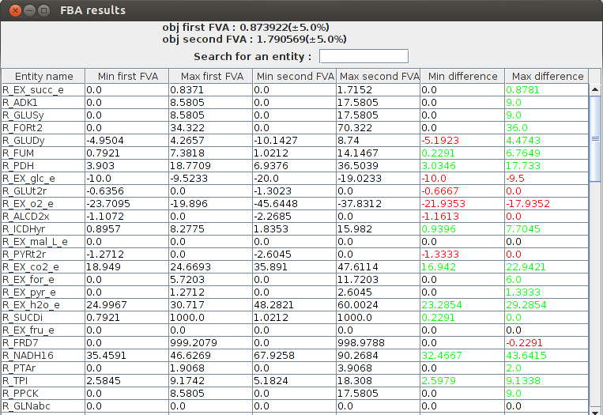
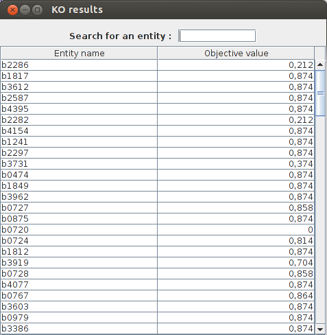
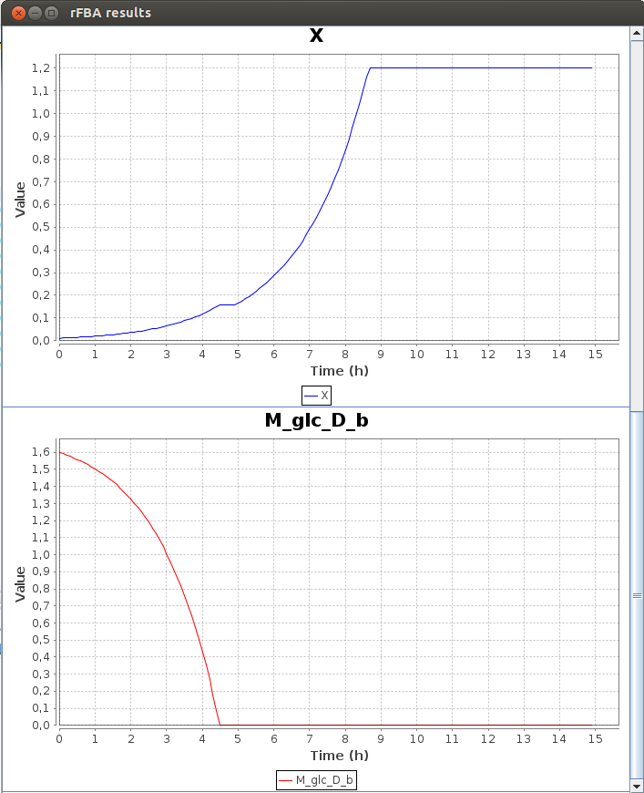
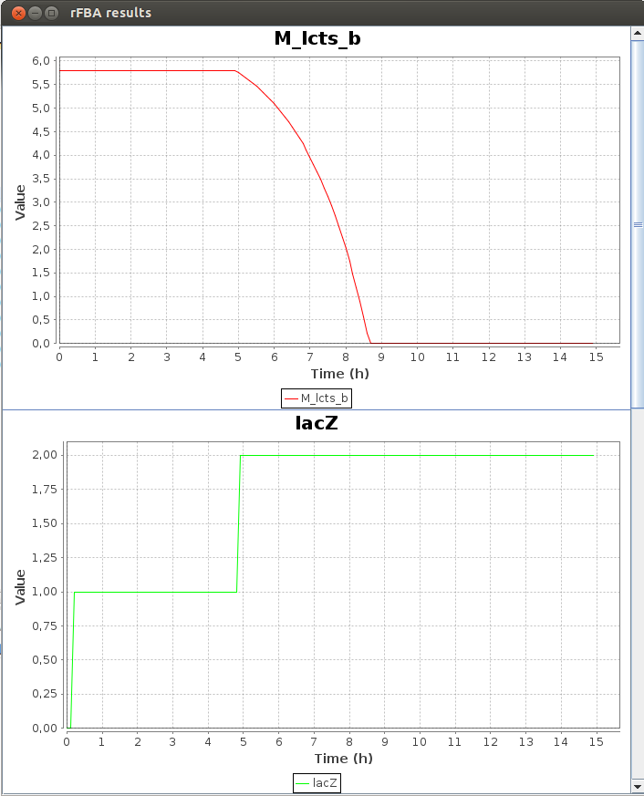
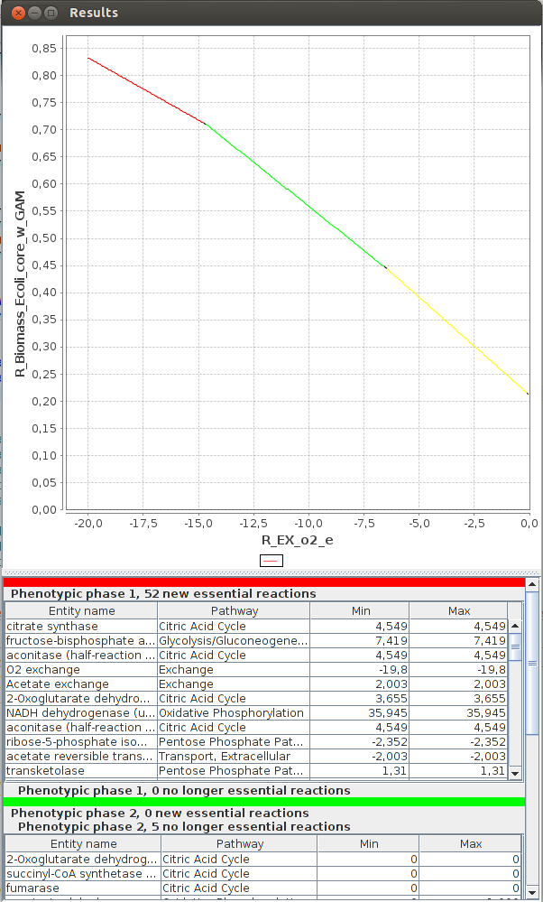
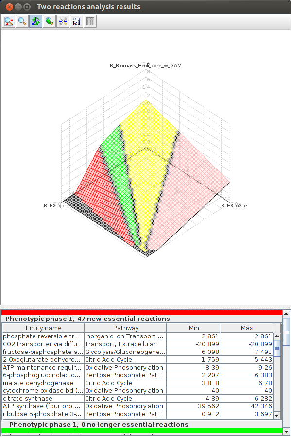
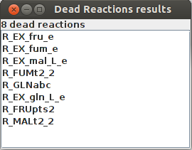

FlexFlux is a tool for metabolic flux and regulatory network analysis. It is usable as a Java executable file (.jar format) via command line or graphical user interface.
To analyse metabolic fluxes, FlexFlux is based on a mathematical method, FBA (Flux Balance Analysis) which consists in transforming a metabolic network into linear equations and calculate fluxes thanks to linear programming. This method does not rely on kinetic parameters but is based on constraints, in particular steady state constraint (ensuring that each amount of metabolite being produced is consumed). From these constraints, FBA can determine an optimal value (maximal or minimal) for one or more fluxes : the objective function.
To sum up, FBA needs :
FlexFlux performs the whole preliminary step of translating the metabolic network as well as the constraints (that can be logical constraints) into linear equations. Mathematical linear programming caculations are then performed by external optimization software.
Concerning the regulatory network analysis, FlexFlux supports multistate qualitative regulatory networks. This regulatory network is composed of components of different natures (genes, mRNAs, proteins, metabolites ...), that interact with each other in different ways and can have an effect on the metabolic network. FlexFlux performs synchronous updates of the regulatory network state from provided initial values. Once a steady-state of this regulatory network is reached, the states are translated into continuous intervals (see the regulation file section) used as constraints for the FBA. We named this pipeline Regulatory Steady-state Analysis (RSA).
FlexFlux contains many methods dedicated to regulatory network and flux analysis. They are described below.
FlexFlux works by taking as an input three different files:
The format of the constraint file is quite similar to existing file formats like the LP file format used by the solver CPLEX.
This file is used to define the objective function as well as constraints.
To set the objective function :
obj : MAX(2*a + -1*b)where a and b are variables. The variables must be separated by a "+" sign and the coefficients can be any real number.
Multiple objective functions can be written. In that case, all objective functions are sequentially considered. The optimal value of an objective function becomes a new constraint (with a percentage of liberty than can be specified) for the following optimization.
Example :
obj : MAX(R_GLC) obj : MAX(R_BIOMASS)
FlexFlux will first calculate the maximum value for R_GLC, will add it as a constraint, and then will normally continue with R_BIOMASS as the objective function
a 3 6which means 3 < a < 6
b -1which means b=-1
By default, variables are considered as real numbers (they can take every value between their lower and upper bound, including decimal numbers).
If you don't want your variable to be a real number, you can set as a integer or a binary variable.
To add integer variables, they must be written under the line
INTEGERThe lines :
INTEGER a 3 6mean that a can take the value 3, 4, 5 or 6.
For binary values (0 or 1), the variable name has to be written under the line BINARY.
To set it to 0 or 1, the value must be written next to the variable. The lines :BINARY a b 1mean : a is a boolean and can be equal to 0 or 1 and b is a boolean equal to 1.
STARTING POINTExample :
STARTING POINT allolactose 0 P_lacI 0These starting points must be written after the other constraints but before the equations.
EQUATIONSThese equations must be composed of known variables and respect the following rules.
Equations can be a good way of making a shortcut, for instance :
obj : MAX(a) ..... EQUATIONS a = R_GLC + -2*R_AC + 3*R_BIOMASS
Example of a constraint file :
obj : MAX(R_BIOMASS) a 5 c 10 d 0 50 M_glc_D_b 10.4 M_ac_b 0.3 M_lcts_b 5.8 lacZ 0.001 0.03 R_EX_glc_e_ -10.5 999999 R_EX_o2_e_ -15 999999 R_EX_ac_e_ -2.5 4 R_EX_lcts_e_ -3 999999 INTEGER BINARY STARTING POINT allolactose 0 P_lacI 0 EQUATIONS d = 2*a + 3*c
This file corresponds to the description of a regulatory network with multi-state qualitative variables in the XML based SBML-qual file format.
As decribed in [2], components of the network must be added as qualitativeSpecies by specifying an initial qualitative value and the maximum number of states that this variable can have.
Updates
rules for each component are described in the Transition tags : each component has a default value and rules depending on other component states.
FlexFlux uses the given initial values and update rules to update the network state using synchronous update. Once a state that was already found is reached, an attractor has been found. FlexFlux then uses this attractor to create constraints used in the FBA.
FlexFlux allows to translate qualitative states into continuous intervals used as constraints for the FBA. The correspondance between qualitative state and coninutous interval must be specified by the user as a note in the qualitativeSpecies tag.
Example :<qual:qualitativeSpecies qual:id="A" qual:initialLevel="0" qual:maxLevel="2"> <notes> <body xmlns="http://www.w3.org/1999/"> <p>STATE 0:[0,1[</p> <p>STATE 1:]1,4.5]</p> <p>STATE 2:]4.5,+inf]</p> </body> </notes> </qual:qualitativeSpecies>
The key-word FluxSum can be used to get the sum of the absolute values of all fluxes in the network.
It can be used for instance as an objective function :
obj : MIN(FluxSum)
It can be also used as a constraint :
FluxSum 0 3000
This section details all possible analyses using FlexFlux. FlexFlux can used in two modes:
To try the examples of this documentation yourself, you must change the name of the analysis acording to your operating system (see the installation section).
For example, for windowsFlexfluxFBA -s ....becomes
Flexflux.bat FBA -s ....and for linux it becomes
./Flexflux.sh FBA -s ....
The output of all analyses can be either a text file containing all the results data, a graphical representation of the data, or both.
Example :
FlexfluxRSA -reg regNetwork.xml -plot -out out.txt
FlexfluxRSA -reg lacOperon.sbml -cons ConstraintsRSA.txt -out steady_states_result.txt -plot
Steady state analysis result Entity name State 1 State 2 State 3 State 4 State 5(Attractor) Final constraint lower bound Final constraint upper bound EIIAGlc_p 0 0 0 0 0 0.0 0.0 lacI 1 1 1 1 1 1.0 1.0 M_lcts_b 3 3 3 3 3 5.8 5.8 M_glc_D_b 3 3 3 3 3 1.6 1.6 AMPc 0 1 1 1 1 1.0 1.0 permease 0 0 0 0 0 0.0 0.0 lacZ 0 1 0 1 1 1.0 1.0 CAP 1 1 1 1 1 1.0 1.0 lacY 0 1 0 1 1 1.0 1.0 P_lacI 0 1 0 0 0 0.0 0.0 R_LCTStpp 0 0 0 0 0 0.0 0.0 EIIAGlc 1 1 1 1 1 1.0 1.0 betaGal 0 0 1 0 1 1.0 1.0 R_LACZ 0 0 0 0 0 0.0 0.0 allolactose 0 1 1 1 1 1.0 1.0
The graphical result :
FlexFlux Regulatory steady-state analysis results. The state of the network is updated from the initial values given in the regulation file. The attractor found in shown in green (state 5 here).
This results shows that the steady-state found in this analysis corresponds to the utilisation of glucose by E.Coli and the repression of lactose utilisation.Example :
FlexfluxFBA -s network.xml -cons cons.txt -reg regNetwork.xml -plot -out out.txt
FlexfluxFBA -s coli.xml -cons constraintsFBA_coli.txt -out FBA_result.txt -reg lacOperon.sbml -plot
FBA result obj : 0.592258 b2309_and_b2307_and_b2306_and_b2308 Not Constrained b4031 Not Constrained b4032 Not Constrained b4033 Not Constrained b4034 Not Constrained R_PANTS 3.41E-4 M_actp_c Not Constrained R_G6Ptex 0.0 R_12DGR141tipp 0.0 M_thex2eACP_c Not Constrained R_ASCBptspp 0.0 M_tym_p Not Constrained R_DXPRIi 0.001415
The graphical result :
FlexFlux FBA results. In these conditions, given the constraints from the steady state of the regulatory network, the maximum biomass production is 0.592258 and we can see the value of all other variables.
In the output, we can see all the reaction fluxes corresponding to glucose utilisation by E.Coli. This particular phenotype is forced by the regulatory network steady state.An FVA consists in getting the optimal value for the objective function, setting this value as a constraint and, given a list of entities, minimize and maximize their values. This analysis returns the objective value, and the minimum and maximum value for each entity desired.
The advantage of FlexFlux's FVA compared to classical FVA is that it is not limited to biochemical reactions. It can be done on any variable.
Example 1 :
FlexfluxFVA -s network.xml -cons cons.txt -reg regNetwork.xml -plot -out out.txtThis example is a simple FVA analysis on all reactions described in network.xml.
Example 2 :
FlexfluxFVA -s network.xml -cons cons.txt -reg regNetwork.xml -plot -out out.txt -e "R1 R2 G1 G2" -lib 10Here, the FVA will be run on the reactions R1 and R2 and on the genes G1 and G2 with a liberty of 10% for the objective constraint.
FlexfluxFVA -s coli_core.xml -cons constraintsFBA.txt -out FVA_result.txt -lib 10 -plot
FVA result obj : 0.873922(+-10.0%) Name min max R_CYTBD 35.984865 51.239087 R_PPCK 0.0 17.161 R_PGM -16.732521 -8.686588 R_Biomass_Ecoli_core_w_GAM 0.786529 0.873922 R_SUCCt3 0.0 22.881333 R_PPC 0.0 20.346866 R_GLNabc 0.0 0.0 R_SUCOAS -8.045934 0.0 R_CS 0.848587 8.89452 R_EX_glu_L_e 0.0 1.271185 R_EX_akg_e 0.0 1.430083
The graphical result :
FlexFlux FVA results. Minimum and maximum flux of each reaction for a maximized biomass production (with a liberty of 10%).
Example 1 :
FlexfluxCompFVA -s network.xml -cons cons.txt -cons2 cons2.txt -reg regNetwork.xml -plot -out out.txt
Example 2 :
FlexfluxCompFVA -s network.xml -cons cons.txt -cons2 cons2.txt -reg regNetwork.xml -plot -out out.txt -e "R1 R2 G1 G2"
FlexfluxCompFVA -s coli_core.xml -cons constraintsFBA.txt -cons2 constraintsFBA2.txt -out comp_FVA_result.txt -lib 5 -plot
FVA comparison result obj1 : 0.873922(+-5.0%) obj2 : 1.790569(+-5.0%) Name min1 max1 min2 max2 R_EX_succ_e 0.0 0.837122 0.0 1.715171 R_ADK1 0.0 8.5805 0.0 17.5805 R_GLUSy 0.0 8.5805 0.0 17.5805 R_GLUDy -4.950357 4.265735 -10.142737 8.740022 R_FORt2 0.0 34.322 0.0 70.322 R_FUM 0.792103 7.381819 1.021209 14.146736 R_EX_glc_e -10.0 -9.523306 -20.0 -19.023306 R_PDH 3.903028 18.770887 6.937593 36.503884 R_GLUt2r -0.635593 0.0 -1.302259 0.0 R_EX_o2_e -23.709518 -19.895962 -45.644797 -37.831242
The graphical result :
FlexFlux FVA comparison result. We can see the differences between the two conditions. The glucose uptake is bigger in the second case so the biomass production is higher. The two last columns make the comparison between the the FVA's easier. Green values mean the result is higher is the second condition, and red values mean the result is lower in the second condition.
Example 1 :
FlexfluxKO -s network.xml -cons cons.txt -reg regNetwork.xml -plot -out out.txt -mode 1This example is a simple KO analysis run on all network genes (mode = 1).
Example 2 :
FlexfluxKO -s network.xml -cons cons.txt -reg regNetwork.xml -plot -out out.txt -e "R1 R2 G1 G2"Here the KO analysis is run on the reactions R1 and R2 and the genes G1 and G2.
FlexfluxKO -s coli_core.xml -cons constraintsFBA.txt -out KO_result.txt -mode 1 -plot
KO results : b2277 obj value : 0.211663 b1819 obj value : 0.873922 b3528 obj value : 0.873922 b2296 obj value : 0.873922 b3612 obj value : 0.873922 b2285 obj value : 0.211663 b0720 obj value : 0.0 b2914 obj value : 0.873922
The graphical result :
FlexFlux KO analysis result. The analysis is performed on genes because we set the parameter "mode" to 1. We can see what genes are essentials for biomass production. For exemple the gene b0720 is essential because the maximum biomass production is 0 when this gene is knocked out.
This analysis is based on external metabolic concentrations and cell density. Given initial metabolite concentrations, cell density, a time step and a number of iterations, this analysis returns the value of each metabolite and cell density for each time. Initial metabolite concentrations must be written in the constraint file.
Example 1:
FlexfluxTDRFBA -s network.xml -cons cons.txt -reg regNetwork.xml -bio R_BIOMASS -x 0.01 -plot -out out.txtThis a a RFBA analysis on the network described in network.xml. The biomass reaction is R_BIOMASS and the initial cell density is 0.01 g/L.
Example 2:
FlexfluxTDRFBA -s network.xml -cons cons.txt -reg regNetwork.xml -bio R_BIOMASS -plot -out out.txt -x 0.01 -t 0.02 -it 400 -e "R1 R2 G1 G2"Here, the timestep between each iteration will be 0.02 h and the entities R1, R2, G1 and G2 will be added to the results.
FlexfluxTDRFBA -s coli.xml -cons constraintsFBA_coli.txt -reg lacOperon.sbml -out TDRFBA_result.txt -bio R_BIOMASS -e lacZ -x 0.011 -plot
The values for this example are extracted from [3] and algorithms for calculations are detailed in [6].
Here is a part of the text result file TDRFBA_result.txt :Time M_lcts_b lacZ X M_glc_D_b 0.0 5.8 0.0 0.011 1.6 0.1 5.8 0.0 0.011671 1.592634 0.2 5.8 1.0 0.012383 1.584819 0.3 5.8 1.0 0.013139 1.576526 0.4 5.8 1.0 0.013941 1.567728 0.5 5.8 1.0 0.014791 1.558393 0.6 5.8 1.0 0.015694 1.548488 0.7 5.8 1.0 0.016651 1.53798 0.8 5.8 1.0 0.017667 1.526829 0.9 5.8 1.0 0.018745 1.514999 1.0 5.8 1.0 0.019889 1.502447
The graphical result :
 FlexFlux time dependant flux analysis result. We can see the variation of the value of differents entities. X represents the cell density. While the glucose concentration (M_glc_D_b) is greater than 0, the gene lacZ is not activated. When all the glucose is used, lacZ is activated and the cell can use the lactose to grow.
We can see that the lac regulatory network of E.Coli force utilisation of glucose first, and then when it runs out, switches to lactose utilisation, with a lower growth rate.This analysis returns the objective value for each reaction flux.
This permits a phenotype phase plane analysis. [4]
A phenotype phase corresponds to a specific metabolic network behavior.
In order to do that, it calculates the shadow price on each point and groups the points with same shadow price into phenotipic phases that are represented in different colors. To give a hint on what reactions are active in each phase, a FVA is applied on each one and the result is graphically shown: essential reactions are displayed.
Example :
FlexfluxPP2D -s network.xml -cons cons.txt -reg regNetwork.xml -r R1 -init -10 -end 0 -plot -out out.txt
FlexfluxPP2D -s coli_core.xml -cons constraintsFBA.txt -out PP2D_result.txt -r R_EX_o2_e -init -20 -end 0 -f 0.05 -plot
Reaction flux result Flux : R_EX_o2_e Objective : R_Biomass_Ecoli_core_w_GAM Flux Objective -20.0 0.832614 -19.95 0.831466 -19.9 0.830318 -19.85 0.82917 -19.8 0.828023 -19.7 0.825727 -19.75 0.826875
The graphical result :
FlexFlux 2-D Phenotypic phase analysis. We can see the evolution of the maximum biomass production for different values of oxygen uptake.
We can observe three distinctive phenotypic phases. This shows that E.Coli can respond in three different ways to oxygen concentrations.This analysis returns the objective value for each combination of two reaction fluxes.
This permits a phenotype phase plane analysis.
In order to do that, it calculates the shadow price on each point and groups the points with same shadow price into phetotipic phases that are represented in different colors. To give a hint on what reactions are active in each phase, a FVA is applied on each and the result is graphically shown : essential reactions are displayed (the "order" found for the phases is only indicative and might not have any biological meaning).
Example:
FlexfluxPP3D -s network.xml -cons cons.txt -reg regNetwork.xml -r R1 -init -20 -end 0 -r2 R2 -20 -end2 0 -f2 0.2 -plot -out out.txt
FlexfluxPP3D -s coli_core.xml -cons constraintsFBA.txt -out PP3D_result.txt -r R_EX_glc_e -init -20 -end 0 -f 0.5 -r2 R_EX_o2_e -init2 -20 -end2 0 -f2 0.05 -plot
Two reactions fluxes result Flux1 : R_EX_glc_e Flux2 : R_EX_o2_e Objective : R_Biomass_Ecoli_core_w_GAM Flux1 Flux2 Objective -20.0 -19.5 1.192735 -20.0 -20.0 1.208983 -20.0 -19.0 1.176487 -20.0 -18.5 1.160239 -20.0 -17.5 1.127742 -20.0 -18.0 1.14399 -20.0 -16.5 1.095245 -20.0 -16.0 1.078997 -20.0 -15.5 1.062749 -20.0 -17.0 1.111494 -20.0 -15.0 1.0465
The graphical result :
FlexFlux 3-D Phenotypic phase analysis result. We can see the evolution of the maximum biomass production for different values of oxygen and glucose uptake. We observe four distinctive phenotypic phases.
The goal of this analysis is to determine what objective (or set of objectives) an organism is optimizing.[5]
It take as an argument a file containing the objective functions to test and experimental values, and finds out (in one, two and three dimensions) what objective optimization is closest to the experimental values.
The objectives that are optimized are those for witch the experimental values are the closest to the pareto surface.
The pareto surface is the surface in which all points are pareto optimal. This means that to increase the value of an objective, you must decrease another.
In this analysis, the objective function of the constraints file is optional and ignored if present.
The file must contain all the objectives in the first line, and then one line per experimental value. There must be as many values for one experiment as there are objective functions.
For each experimental value, values for the objectives must be in order and separated by a space.
Example:
MIN(sum) MAX(atpYield) MAX(R_Biomass_Ecoli_core_w_GAM) 1667.4 213.0 6.4 1635.9 191.0 7.9 1622.2 204.0 7.2 1640.4 171.0 7.4 1696.2 176.0 7.2 1657.4 173.0 7.4 1642.9 207.0 6.9 1616.7 185.0 7.7 1569.8 198.0 7.8
Example : FlexfluxPareto -s network.xml -cons cons.txt -int regNetwork.xml -plot -e expFile
FlexfluxPareto -s coli_core.xml -cons constraintsPareto.txt -exp expFile.txt -out pareto/ -plot
The graphical results :
Axes values are normalized such that the coordinates of the points on the Pareto surface range from 0 to 1, where 1 represents the theoretical minimum or maximum of an objective.
FlexFlux Pareto analysis result.
Example 1 : FlexfluxDR -s network.xml -plot -out out.txt
Example 2 : FlexfluxDR -s network.xml -cons cons.txt -reg regNetwork.xml -plot -out out.txt -mode 1 -d 0.1
FlexfluxDR -s coli_core.xml -out DR_result.txt -plot
Dead Reactions result R_EX_fru_e R_EX_fum_e R_EX_mal_L_e R_FUMt2_2 R_GLNabc R_EX_gln_L_e R_FRUpts2 R_MALt2_2
The graphical result :
FlexFlux dead reaction identification result. In these conditions, those 8 reactions cannot carry any flux
Reaction classification
Gene classification algorithm
Hucka M, Finney A, Sauro HM, Bolouri H, Doyle JC, Kitano H, Arkin AP, Bornstein BJ, Bray D, Cornish-Bowden A, Cuellar AA, Dronov S, Gilles ED, Ginkel M, Gor V, Goryanin II, Hedley WJ, Hodgman TC, Hofmeyr JH, Hunter PJ, Juty NS, Kasberger JL, Kremling A, Kummer U, Le Novère N, Loew LM, Lucio D, Mendes P, Minch E, Mjolsness ED, Nakayama Y, Nelson MR, Nielsen PF, Sakurada T, Schaff JC, Shapiro BE, Shimizu TS, Spence HD, Stelling J, Takahashi K, Tomita M, Wagner J, Wang J: The systems biology markup language (SBML): a medium for representation and exchange of biochemical network models. Bioinformatics 2003
Chaouiya C, Bérenguier D, Keating SM, Naldi A, van Iersel MP, Rodriguez N, Dräger A, Büchel F, Cokelaer T, Kowal B, Wicks B, Gonçalves E, Dorier J, Page M, Monteiro PT, von Kamp A, Xenarios I, de Jong H, Hucka M, Klamt S, Thieffry D, Le Novère N, Saez-Rodriguez J, Helikar T: SBML qualitative models: a model representation format and infrastructure to foster interactions between qualitative modelling formalisms and tools. BMC Syst Biol 2013
Markus W. Covert and Bernhard Ø. Palsson: Transcriptional Regulation in Constraints-based Metabolic Models of Escherichia coli.The Journal of Biological Chemistry 2002
Jeremy S. Edwards, Ramprasad Ramakrishna, Bernhard O. Palsson: Characterizing the Metabolic Phenotype: A Phenotype Phase Plane Analysis. Biotechnology and bioengineering 2002
Robert Schuetz, Nicola Zamboni, Mattia Zampieri, Matthias Heinemann, Uwe Sauer: Multidimensional Optimality of Microbial Metabolism. Science 2012
Amit Warma and Bernhard Ø Palsson: Stoichiometric flux balance models quantitatively predict growth and metabolic by-product secretion in wild-type Escherichia coli W3110. Appl Environ Microbiol. 1994
Lewis NE, Hixson KK, Conrad TM, Lerman JA, Charusanti P, Polpitiya AD, et al. Omic data from evolved E. coli are consistent with computed optimal growth from genome-scale models. Mol Syst Biol. 2010 Jul;6:390.